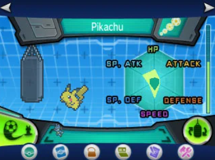

Oak's Gym
This training center was founded by Professor Samuel Oak who was once a very high skilled trainer in his youth and now studies pokemon.
What do we Provide?
Our main service that we provide is called EV training. EV training is short for effort training which is the process of training your Pokémon's stats to optimize them for competitive scene. There are two different ways we are able to EV train any pokemon for specific areas of strength but we provide an after service to help with trainer's needs at any time.
- Super Training
- Horde Training
- Store
- Healing
- Trainer Battle Area
- Move Speacilist
How does EV Training Work?
Imagine your pokemon has status values that can put in the categories health, attack, defense, special attack, special defense, and speed. If you pokemon is slow you may disregard trying to dodge and put more effort into taking more attacks head on.
From observing the Kalos region we have found out that fighting certain pokemon can help your pokemon becom stronger in certain areas. For example, fighting a plus can grant increase gains in attack or a fighting a minus can grant increases in special attack.
As a trainer who is interest in this method we have a grass field that allow customers to use for such purpose but beware that pokemon can and will gang on trainers if they pack pokemon. We've multiple instances of pack pokemon battling trains so we encourage using our staff service to go and do this for trainers who may not have strong enough pokemon and urge you to have at least five escape items on you before going in.
We have basic items like revives, potions, elvolution stones, wide range of pokeballs,fruits(that can help raise stats), and items that when held in a battle can give useful effects. Down below are links to the Pokemon X and Y Guide published by IGN and Bulbagarden for store prices.